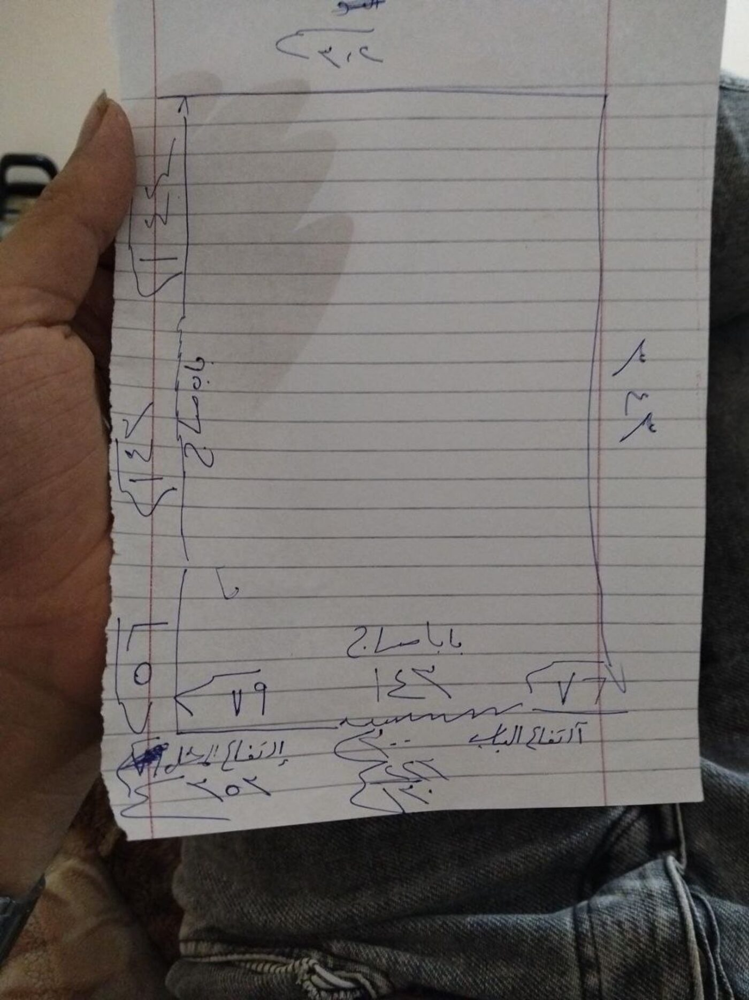
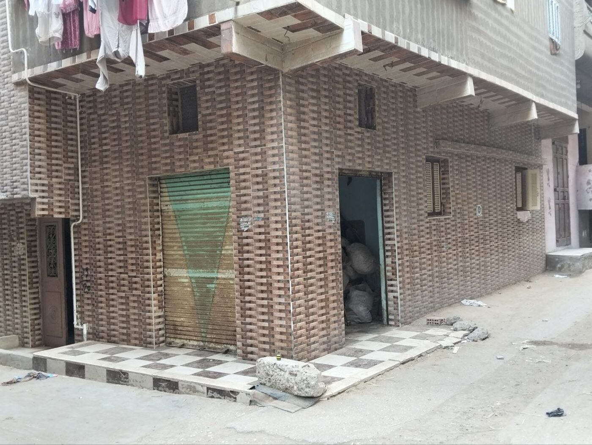
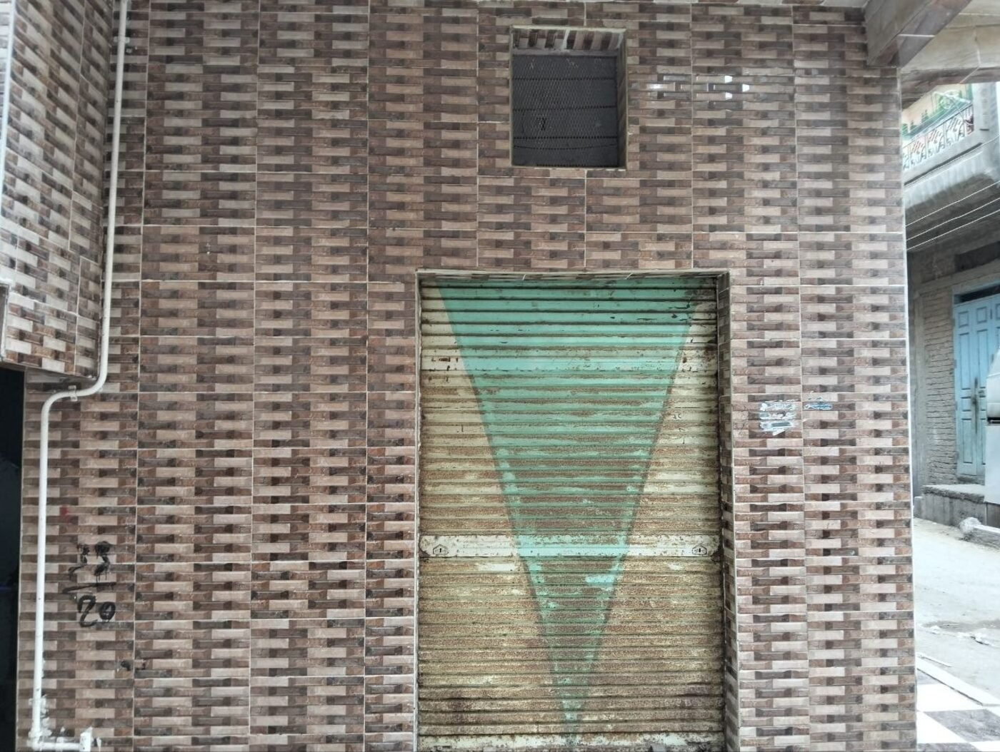
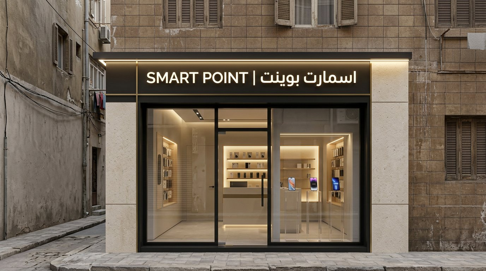
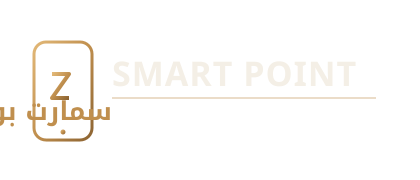
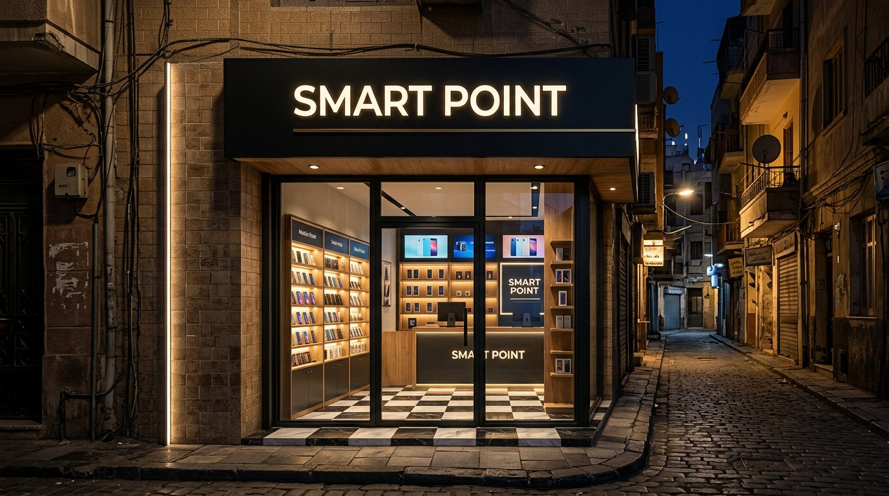
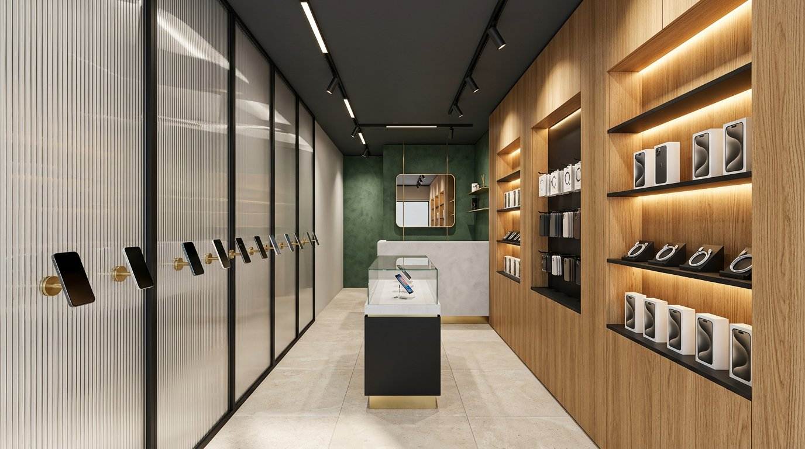
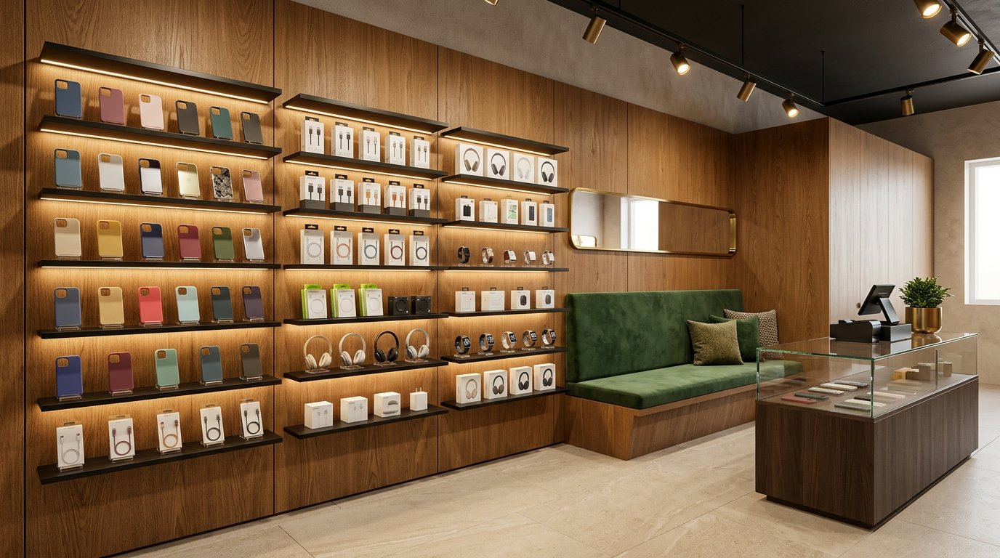
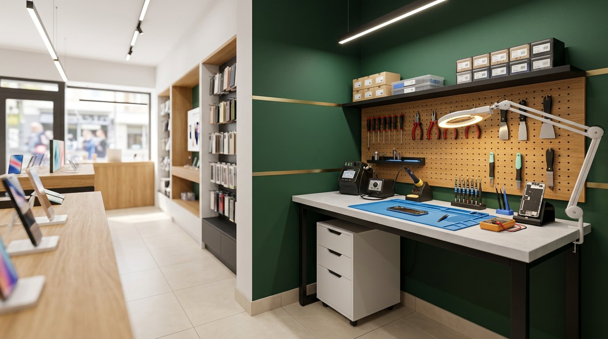

إعادة تصميم محل صغير (≈ ١١ م²) لبيع وشراء وصيانة الهواتف والأكسسوار: واجهة زجاجية مضيئة تُغيّر صورة المحل في الشارع، وداخل مُنظَّم يقسّم المساحة إلى عرض وبيع وصيانة دون أن يفقد راحة الحركة.
الموقع: محل بالدور الأرضي أسفل مبنى سكني، واجهة طوب بلاكيه بني، شيش معدني أخضر، وأرضية رخام شطرنج عند المدخل، في شارع ضيق.



لا نغيّر المبنى؛ نضع داخله عنصرًا جديدًا متناقضًا معه. الطوب البني يبقى كما هو، وبداخله جسم من الزجاج والنحاس والخشب الدافئ.
إضاءة دافئة ٣٠٠٠ كلفن داخل المحل، ولافتة بيضاء مضيئة تُقرأ ليلًا. المحل نفسه يصبح «إعلان» الشارع.
خشب بلوط فاتح للجدران والأرفف: دافئ، رخيص التنفيذ، ويُبرز الهواتف السوداء كخلفية هادئة.
لمسات نحاسية رقيقة (شرائط، مقابض، أرجل الكاونتر). لا تُستخدم بكثرة: خط نحاسي واحد يكفي ليُشعرك بالفخامة.

اسم مقترح قابل للتغيير: «سمارت بوينت / SMART POINT». الحروف اللاتينية تُقرأ سريعًا من بعيد، والعربية تُثبّت الاسم محليًا.

فحمي#15181B — الإطارات والواجهة
نحاسي#C08F4E — لمسات ولمبات
أخضر داكن#1F3A34 — جدار الصيانة
خشب بلوط#C99A63 — الأرفف
بيج فاتح#EFE7DA — الأرض والسقف
نفتح الواجهة بين العمودين ونضع إطار ألومنيوم أسود رفيع، ونُخفي الشيش المعدني للأمان داخل «صندوق» أعلى الواجهة حتى لا يظهر في النهار.

حل المساحة الضيقة لا يكون بإضافة أثاث، بل بتقسيم الحوائط: عرض على اليمين، خدمة على اليسار، صيانة في الخلف، وممر واضح في المنتصف.
| المنطقة | المساحة | الوظيفة |
|---|---|---|
| العرض الأمامي | 2.6 م² | فيترينة + واجهة زجاجية |
| الخدمة والبيع | 2.2 م² | كاونتر + كاشير + تغليف |
| جدار العرض | 1.6 م² | هواتف + أكسسوار |
| ركن الصيانة | 1.9 م² | بنش + أدوات + قطع غيار |
| انتظار وممر | 2.6 م² | حركة 1.0 م صافية |
سقف فحمي منخفض الإحساس + جدران خشب بلوط + أرضيات بورسلين بيج فاتح. الألوان الداكنة تُقلل الشعور بالضيق حين تكون في السقف فقط.



مواصفات قابلة للتسعير مباشرة مع أي مقاول أو ورشة نجارة. الأولوية للبنود التي تُرى وتُلمس: الأرض، الجدار، الأرفف، الإضاءة.
| العنصر | المواصفة | ملاحظات التنفيذ |
|---|---|---|
| الأرضيات | بورسلين 60×60 بيج فاتح، ملمس مطفي | فواصل 2 مم بلون قريب، ضروري لتقليل الانزلاق والغبار |
| الحوائط | خشب بلوط + دهان أخضر داكن (جدار الصيانة) | دهان شبه مطفي قابل للغسل، وشرائط نحاسية 10 مم |
| السقف | جبسوم بورد أسود مطفي + مسار معدني مكشوف | ارتفاع صافي 2.85 م بعد السقف، مع كشف للصيانة |
| الواجهة | ألومنيوم أسود + زجاج سيكوريت 10 مم | شبك أمان داخلي + قفل أرضي |
| الإنارة العامة | 2 × خطي LED 3000K، CRI ≥ 90 | طول 1.5 م على مسار واحد في المنتصف |
| إنارة العرض | Spot 7W بزاوية 24° على كل رف | 2000K دافئ — يبرز لون الأجهزة الحقيقي |
| إنارة المهام | مصباح عدسة 5W على بنش الصيانة | مستقل بمفتاح، إضاءة 1000 لوكس |
| الواجهة exterior | شريط LED 24V أسفل اللافتة | مقاوم للماء IP65، محول محمي |
| التكييف | سبليت 1.5 حصان إنفرتر | موضع الوحدة الداخلية أعلى الجدار الخلفي |
| الكهرباء | لوحة 12 قاطع + 8 نقاط كهرباء + 2 USB | منفصلة: إنارة / تكييف / أجهزة عرض / ورشة |
| البيانات | راوتر + كابل شبكة للكاشير + Wi-Fi للعملاء | كابل مخفي في مواسير داخل الحوائط |
الكثافة المستهدفة: 500–700 لوكس على الأرفف، 300 لوكس للمرور، 1000 لوكس على بنش الصيانة.
أرقام إرشادية بالجنيه المصري لأعمال التشطيب والديكور فقط (بدون إيجار أو ترخيص أو بضاعة). تُطلب ٣ عروض أسعار قبل الترسية.
| البند | اقتصادي | متوازن ★ | فاخر |
|---|---|---|---|
| فتح الواجهة ومعالجة المبنى | 6,000 | 9,000 | 13,000 |
| ألومنيوم + زجاج سيكوريت | 22,000 | 34,000 | 52,000 |
| شيش أمان داخلي | 6,000 | 9,000 | 14,000 |
| لافتة مضيئة وحروف بارزة | 7,000 | 13,000 | 24,000 |
| تشطيب الواجهة ودهانات خارجية | 4,000 | 7,000 | 12,000 |
| كهرباء وإنارة | 12,000 | 20,000 | 32,000 |
| تكييف وتهوية | 9,000 | 14,000 | 22,000 |
| أسقف جبس/معدن + إنارة مدمجة | 6,000 | 10,000 | 18,000 |
| أرضيات بورسلين | 4,000 | 7,000 | 13,000 |
| أثاث العرض والجدران الخشبية | 28,000 | 48,000 | 80,000 |
| كاونتر + فيترينة | 12,000 | 20,000 | 34,000 |
| تجهيز ركن الصيانة | 9,000 | 15,000 | 26,000 |
| كاميرات وإنذار | 5,000 | 8,000 | 14,000 |
| براندنج وستيكرات ولوحات | 2,000 | 5,000 | 9,000 |
| تخزين وخزنة وأثاث انتظار | 5,000 | 9,000 | 16,000 |
| مصنعية ونقل وطوارئ (≈10%) | 14,000 | 23,000 | 38,000 |
| الإجمالي التقديري | 151,000 ج.م | 251,000 ج.م | 417,000 ج.م |
نفس التخطيط واللون، بمواد محلية: MDF melamine بدل القشرة، زجاج 8 مم، إنارة عادية. مناسب لو الميزانية هي القيد الأول.
الاختيار الموصى به: واجهة سيكوريت 10 مم، خشب قشرة بلوط، إضاءة ثلاث طبقات، لافتة مضيئة. أفضل قيمة مقابل الشكل النهائي.
خشب طبيعي، ميكروسمنت مصنّع، نحاس حقيقي، إضاءة DALI قابلة للتشغيل السيناريوهات، شيش بموتور. لماركة تريد التميّز في الشارع.
الترتيب مهم: الكهرباء والتكييف قبل الأسقف، والأسقف قبل النجارة، والنجارة قبل الزجاج حتى لا تُخدش.
قياسات ليزر، رفع مخفي للكهرباء، اعتماد الرسومات والمواد، التعاقد مع ورشة النجارة والألومنيوم.
فتح الواجهة، ترميم، مواسير كهرباء وسباكة، نقاط التكييف، تلييس الحوائط.
جبسوم بورد ومجرى الإنارة، بورسلين الأرضيات، دهانات الجدران.
جدار العرض، الكاونتر، أرفف الأكسسوار، ركن الصيانة، الأدراج.
ألومنيوم وزجاج، شبك الأمان، تركيب اللافتة المضيئة وتوصيلها.
إنارة، كاميرات، تكييف، تنظيف، تنسيق العرض الأول، تجربة تشغيل، افتتاح.